Note on Aug. 31, 2019
| Date: | Aug 31, 2019 |
|---|---|
| Last Updated: | Sep 3, 2019 |
| Categories: | |
| Tags: |

Contents
Introduction
In the notes on May 16, we have already talked about the Adam algorithm. Combining the first-order momentum and the adaptive learning rate, Adam performs the normalization on the gradients. When the gradient is too strong, Adam correct it by reducing the learning rate, vice versa. In the aforementioned notes, we have explained why Adam is designed like this and pointed out that the proof of Adam is not correct. In this topic, we would talk about another paper, which is aimed at correcting the problem of Adam and giving a correct proof. The paper where we discuss the theory and proof is in the following paper:
In this article, the author proposes tha Adam would not get converged in some cases. In the introduction part, the author points out that the existing adaptive methods are easy to eliminate the influences from the minibatches with large gradients, which makes those algorithms would not get converged on a convex problem. As an alternative, the proposed algorithm, AMSGrad, has solved such a problem. It could be summarized as below:
- Denotation:
- $T$: iteration number;
- $\alpha_t$: step size on time $t$;
- $\delta$: small indefinite amount that is usually 1e-8;
- $\rho_1,~\rho_2$: two decay rates;
- $\mathbf{s}$: momentum which is initialized as $\mathbf{0}$;
- $\mathbf{r}$: adaptive learning rate which is initialized as a diagonal matrix $\mathrm{diag}(\mathbf{0})$.
- $\tilde{\mathbf{r}}$: corrected adaptive learning rate which is initialized as a diagonal matrix $\mathrm{diag}(\mathbf{0})$.
- Then in each iteration $t={1,~2,~3,~\cdots,~T}$, we have
- Pick m samples randomly from a set (or pick those samples in sequence from a randomly shuffled set). We call the m samples $(\mathbf{x}_k,~\mathbf{y}_k)$ as a batch;
- Calculate the gradient $\mathbf{g} = \frac{1}{m} \nabla_{\boldsymbol{\Theta}} \sum\limits_{k=1}^m \mathcal{L} \left( \mathbf{y}_k,~ \mathcal{D}_{\boldsymbol{\Theta}} (\mathbf{x}_k) \right)$;
- Update the momentum by $\mathbf{s} \leftarrow \rho_1 \mathbf{s} + (1 - \rho_1) \mathbf{g}$;
- Update the adaptive learning rate by $\mathbf{r} \leftarrow \rho_2 \mathbf{r} + (1 - \rho_2) \mathrm{diag}(\mathbf{g})^2$;
- $\dagger$ Correct the adaptive learning rate by $\tilde{\mathbf{r}} \leftarrow \max \left( \tilde{\mathbf{r}}, \mathbf{r} \right)$;
- Correct the initialization bias by $\hat{\mathbf{s}} \leftarrow \dfrac{\mathbf{s}}{1 - \rho_1^t}$, $\hat{\mathbf{r}} \leftarrow \dfrac{\tilde{\mathbf{r}}}{1 - \rho_2^t}$;
- Update parameters by $\boldsymbol{\Theta} \leftarrow \boldsymbol{\Theta} - \dfrac{ \epsilon }{\delta + \sqrt{\hat{\mathbf{r}}}} \hat{\mathbf{s}}$.
$\dagger$: This is the modification which makes AMSGrad different from Adam. Since it uses the maximal $\mathbf{v}$ to update the learning rate, the gradient direction is guided by the momentum more.
Theory
Abstract framework for adaptive algorithms
The previous adaptive methods are though to have a common abstract framework. We use $\phi$ to represent the momentum function and $\psi$ to represent the adaptive learning rate function. The framework could be described as:
| Abstract framework of adaptive algorithms |
|---|
|  |
Such a frame work would be applied on almost all kinds of optimizers in deep learning. After defining the specific $\phi$ and $\psi$, it would becomes a concrete learning algorithm.
| Algorithm | $\phi$ | $\psi$ |
|---|---|---|
| SGD | $g_t$ | $\mathbf{I}$ |
| AdaGrad | $g_t$ | $\sum_{i=1}^t \left( \mathrm{diag}(g_i)^2 \right)$ |
| RMSProp | $g_t$ | $\left( 1 - \beta\right) \sum_{i=1}^t \left( \beta^{t-i}\mathrm{diag}(g_i)^2 \right)$ |
| Adam | $\left( 1 - \beta_1\right) \sum_{i=1}^t \left( \beta_1^{t-i} g_i \right)$ | $\left( 1 - \beta_2\right) \sum_{i=1}^t \left( \beta_2^{t-i}\mathrm{diag}(g_i)^2 \right)$ |
In the above frame work, we apply the projection on the parameters in the last step. Here we define the projection as
where $\mathcal{F}$ is the feasible domain and $\mathbf{A}$ is a diagonal matrix. The projection is required especially when we apply constraints on the optimized parameters. This step could ensure that the parameter would not get out of the feasible domain. In Keras, such a technique has been realized. Users who are interested in the implementation could review the documentation.
Non-convergence of Adam
Start from a strong assumption
The author has proved that Adam would not get converged on such a loss function:
where $C>2$ and the feasible domain is $x \in [-1,~1]$. Note that this loss function is linear and convex.
To learn how it happens, first we need to confirm the optimal regret. Regret function measures the distance between the curren losses and optimal losses in the whole learning process. It is defined as
To find the optimal regret, we only need to locate the minimal point (optimal solution) for the loss function $f_t$. Consider the stochastic function $(2)$, we could find that the expectation of this function is $\mathbb{E}_{t} [f_t (x)] = (\frac{1}{3} C - 1) x$. Since $C>2$, we would find that when $x=-1$, this function has minimal expectation $1 - \frac{1}{3} C$.
Now let us consider the gradient of $f_t (x)$.
For the Adam, we define the hyperparameters as
| Parameter | Value |
|---|---|
| $\beta_1$ | 0 |
| $\beta_2$ | $\dfrac{1}{1 + C^2}$ |
| $\alpha_t$ | $\frac{\alpha}{\sqrt{t}}$ |
| $\mathcal{F}$ | $[-1,~1]$ |
The value of $\beta_2$ is a strong assumption. We would derive how to get this assumption later. Although in most cases, such an assumption may not hold, we could still start from it to begin our derivation.
Assume that $\mathbf{x}_{3t+1} = 1$, then we have $\mathbf{g}_{3t+1} = C$, and
where we define
If we assume that the initial step size $\alpha$ is small enough, i.e. $\alpha < \sqrt{1 - \beta_2}$, then we have $T_1 < 1$, which means $0 < \hat{\mathbf{x}}_{3t+2} < 1$.
Note that in the last step we need to apply $\mathbf{x}_{3t+2} = \Pi_{\mathcal{F},~\mathbf{V}} (\hat{\mathbf{x}}_{3t+2})$. Since $\hat{\mathbf{x}}_{3t+2} \in (0,~1)$, we know that $\hat{\mathbf{x}}_{3t+2}$ is in feasible domain, and then we have $\mathbf{x}_{3t+2} \in (0,~1)$.
Then, consider $3t+2$ and $3t+3$, in the two steps, $\mathbf{g}_{3t+i} = -1$, then we have
Since the updates are positive, from $\mathbf{x}_{3t+2} \in (0,~1)$ we could also infer that $\mathbf{x}_{3t+3},~\mathbf{x}_{3t+4} \in (0,~1]$.
Let us assume that $\hat{\mathbf{x}}_{3t+3} > 1$, according to the projection, we have $\mathbf{x}_{3t+3} = 1$. because $\hat{\mathbf{x}}_{3t+4} > \mathbf{x}_{3t+3}$, there would be $\mathbf{x}_{3t+4} = 1$.
The other case is $\mathbf{x}_{3t+3} = \hat{\mathbf{x}}_{3t+3} \in (0,~1)$. In this case, we need to combine $(5)$ and $(7)$ to determine the bound of $\mathbf{x}_{3t+4}$. First, we have
Like what we have done in $(6)$, we could define $T_2$ and find its bound. To determine the lower bound of $T_2$, we need to find the upper bound of the second order momemtum $\mathbf{v}_{3t+i}$. Since $|\mathbf{g}_{3t+i}| \leqslant C$, we have $\mathbf{v}_{3t+i} \leqslant C^2$, then
To make $T_2 \geqslant T_1$, we need to let the following inequality hold:
From $(10)$, we would get the condition $\beta_2 \leqslant \dfrac{1}{1 + C^2}$ easily. So when we let $\beta_2 0 \dfrac{1}{1 + C^2}$, we have $T_2 \geqslant T_1$, which means $\hat{\mathbf{x}}_{3t+4} \geqslant \mathbf{x}_{3t+1} = 1$.
Therefore, in any case, we would find that $\hat{\mathbf{x}}_{3t+4} \geqslant 1$, i.e. we could derive $\mathbf{x}_{3t+4} = 1$ when we start from $\mathbf{x}_{3t+1} = 1$. In this case, we know that for any $t$, there would be $f_{3t+1}(\mathbf{x}_{3t+1}) = C$. Since $f_{3t+1}(\mathbf{x}) \geqslant f_{3t+1}(-1) = -C$, $f_{3t+2}(\mathbf{\mathbf{x}_{3t+2}}),~f_{3t+3}(\mathbf{\mathbf{x}_{3t+3}}) \geqslant -1$ and $f_{3t+2}(\mathbf{-1}),~f_{3t+3}(\mathbf{-1}) = -1$, we could calculate the regret during the 3 steps:
which means the regret could be represented as $R_T = \frac{R_{t,3}}{3} T \geqslant \frac{2C - 4}{3} T$, hence we know $\frac{R_T}{T} \nrightarrow 0$, the algorithm could not get converged.
This derivation is based on a specially designed loss function and three assumptions:
- The initial condition is $\mathbf{x}_{3t+1} = 1$;
- The problem is constrained in a feasible domain $\mathcal{F}=[-1,~1]$;
- The hyperparameter has a bound $\beta_2 \leqslant \dfrac{1}{1 + C^2}$.
The third assumption may not hold for most cases. According to the suggestions from Kingma, we should define a large $\beta_2$ to improve the quality of the solution. Hence, to prove that Adam could not get converged, we still need to generalize this proof.
Generalize the proof in online cases
First, we generalize the loss function. For any $t$,
where $C>0$ and $\mod (C,~2)=0$. The feasible domain is still $x \in \mathcal{F} := [-1,~1]$. This loss function is linear and convex.
Similarly, the minimal point of this linear function is $f_t (-1)$, which means $\sum_{i=t}^{t+C-1} f_t (-1) = - C + ( C - 1 ) = - 1$.
And we still have the gradient
In the following part, we would try to prove that if $C$ is large enough, i.e the following conditions hold, we would prove that the algorithm could not get converged.
| No. | Condition |
|---|---|
| 1 | $(1 - \beta_1) \beta_1^{C-1}C \leqslant 1 - \beta_1^{C-1}$ |
| 2 | $\beta_2^{(C-2)/2}C^2 \leqslant 1$ |
| 3 | $\dfrac{3(1 - \beta_1)}{2\sqrt{1 - \beta_2}} \left(1 + \dfrac{\gamma (1 - \gamma^{C-1})}{1 - \gamma} \right) + \dfrac{\beta_1^{C/2-1}}{1 - \beta_1} < \dfrac{C}{3}$ |
Assume that $\mod(t,C)=0$. The basic idea of the derivation is inferring $\mathbf{x}_{t+C} = 1$ from $\mathbf{x}_{t} = 1$. In the generalized case, we only assume that $\beta_1 \leqslant \sqrt{\beta_2}$. We start with confirming the bound of momentum $\mathbf{m}$ by Condition 1:
If Condition 1 holds, and let $\mathbf{m}_{t} \leqslant 0$, we could get $\mathbf{m}_{t+C} \leqslant 0$ from $(14)$.
Then we need to set a time point $T’$ to ensure that for any large enough $t \leqslant T’$, we would have $t + C \leqslant \tau^t t$, where $\tau \leqslant \frac{3}{2}$. Such a condition implies that we only talk about the case when $T \rightarrow \infty$.
After that, we need to specify the range of the second order momentum. Consider that
If we only preserve the term $j=t+1$, we would have
Assume that $t \geqslant kC$, for $i’ \leqslant i \leqslant C$,
Why the last inequality holds? This is because of Condition 2. Due to the condition, we know that we could find a $i’$ that $\beta_2^{i’-1}C^2 \leqslant 1$. So
This article is still being produced. Please wait for several days to see the full edition.